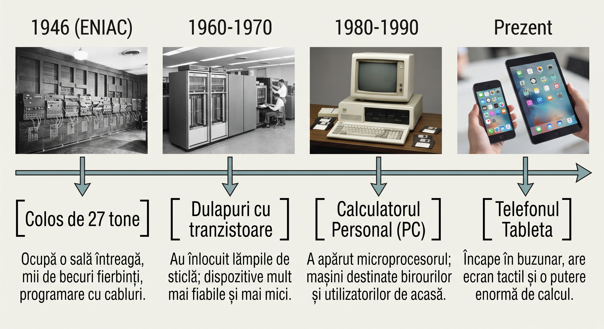

De la o mașină care cântărea 27 de tone și ocupa o cameră întreagă, până la telefonul din buzunarul tău. Voi descoperi din ce este alcătuit un calculator și cum s-a ajuns aici.
Sistemele de calcul se găsesc în jurul tău în fiecare zi:
Un sistem de calcul este format din două componente esențiale: o parte fizică și o parte virtuală.
Este componenta fizică a calculatorului — tot ceea ce poți să atingi și să vezi. Este alcătuit din piese mecanice și electronice.
Sunt programele și aplicațiile care rulează pe calculator. Nu sunt obiecte fizice, ci cod și instrucțiuni care spun calculatorului cum să funcționeze.
Sistemul de operare este un program special care face legătura între tine și componentele fizice ale calculatorului. El administrează toți utilizatorii, gestionează fișierele tale, pornește aplicațiile pe care le solicitezi și controlează toată funcționarea dispozitivului.
Fără sistemul de operare, calculatorul ar fi doar o cutie cu piese nefolosite. Cu sistemul de operare, calculatorul devine funcțional și ușor de utilizat.
Calculatoarele se clasifică după dimensiune și capacitate de procesare.
Este cel mai puternic tip de calculator. Ocupă o cameră întreagă și cântărește tone. Este utilizat pentru calcule extraordinar de complexe: predicții meteo, cercetări spațiale, simulări științifice. Doar instituții mari și state posedă supercalculatoare.
Este utilizat de băncile mari și companiile importante. Poate procesa informații pentru sute de utilizatori simultan, fără să încetinească. Când retrage bani de la bancomat, calculatorul principal al băncii procesează instantaneu tranzacția.
Este mai mic decât calculatorul principal, dar mult mai puternic decât laptopul personal. Se găsește în fabrici pentru controlul mașinilor și în laboratoare medicale pentru analize automate.
Este cel mai cunoscut tip. Laptopul, desktopul, tableta și telefonul sunt calculatoare personale. Sunt mici, accesibile și suficient de puternice pentru utilizările zilnice. Tu folosești cu siguranță un calculator personal.
Pentru a înțelege calculatoarele moderne, trebuie să cunoaștem originea lor. Povestea începe în Statele Unite ale Americii, în 1946, cu apariția primului calculator electronic: ENIAC.
În timpul celui de-Al Doilea Război Mondial, armata Statelor Unite avea nevoie de calcule extrem de rapide. Militarii trebuiau să calculeze traiectoriile rachetelor și să descifreze mesajele codificate ale inamicului. Oamenii efectuau aceste calcule manual, ceea ce durează ore. Dar militarii aveau nevoie de răspunsuri în secunde. Viteza era crucială pentru viață și strategie.
ENIAC (Electronic Numerical Integrator and Computer) era extraordinar de mare. Ocupa o cameră întreagă, cât o sală de clasă. Cântărea 27 de tone — aproximativ cât cinci elefanți. Consumul de electricitate era imens: 150.000 de wați. Pentru a porni ENIAC, era necesară o conexiune specială la o centrală electrică puternică.
ENIAC nu avea procesor de siliciu, cum au calculatoarele de astazi. În schimb, conținea peste 17.000 de tuburi electronice — niște lămpi de sticlă mari. Aceste tuburi se încingeau foarte mult și consumau o cantitate enormă de energie. Se ardeau frecvent, și atunci când se defectau, calculatorul se oprea complet. Inginerii trebuiau să găsească și să înlocuiască lampa defectă dintre mii.
ENIAC nu avea ecran, tastatură sau mouse. Pentru a-i da o problemă de rezolvat, inginerii conectau manual sute de cabluri electrice groase și acționau comutatoare mecanice. Apoi ENIAC procesează calcule și tipărea rezultatul pe hârtie. Ceea ce astazi durează milisecunde, pe ENIAC dura ore sau chiar zile.
ENIAC a demonstrat că o mașină electronică poate efectua calcule automat, fără intervenție umană. Aceasta a fost ideea revoluționară care a schimbat lumea. După ENIAC, inginerii au gândit: „Dacă o mașină poate calcula, o putem face mai mică, mai rapidă și mai eficientă?" Și asta au făcut. Generație după generație, calculatoarele au devenit mai mici și mai puternice.
Concluzie: ENIAC a fost punctul de plecare. De la o mașină de 27 de tone care ocupa o cameră, până la telefonul din buzunarul tău care cântărește 200 de grame. Aceeași idee fundamentală: calculul electronic. Evoluția a durat 80 de ani, dar conceptul a rămas același.

Răspunde la următoarele întrebări pentru a verifica ce ai învățat.